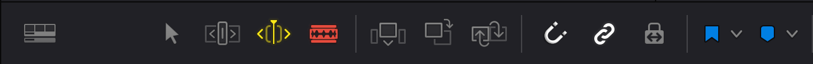
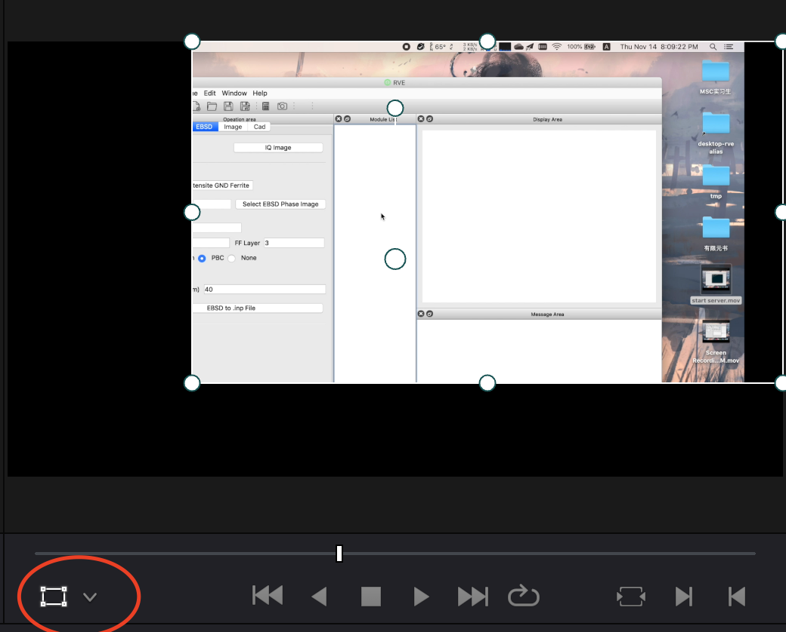

在家闲的无聊，随便学学，B站链接
B站影视剧风达芬奇教程
软件初始设置
偏好设置 -> 用户 -> 项目加载与保存 -> 打开实时保存与项目备份
软件使用
素材导入
在媒体中将素材分类导入到各个媒体文件夹中。
快编和剪辑
剪辑
将视频拖拽到浏览窗口后，通过I和O键设置入口和出口，之后将截取的视频拖拽到时间线即可。
添加特效
在特效库中将效果拖拽到时间线对应的视频进行添加。
添加之后通过效果检查器面板设置参数
快编
快编适合粗剪
Fusion
不推荐使用其制作特效。特效推荐使用AE等。
剪辑
项目设置
设置缓存的目录：文件 -> 项目设置 -> 主设置 -> 工作文件夹
设置帧率：文件 -> 项目设置 -> 主设置 -> 时间线格式 -> 时间线帧率/播放帧率(25)(因为国内交流电频率50Hz)
资源导入
先导入所有素材，然后文件夹分类
视频剪辑
设置出入点I和O键
拖入时间线时可以在浮动的框口中选择只导入画面或音频
创建时间线：建议创建时间线然后再进行拖拽
时间线操作：
- 时间线缩放：alt+鼠标中键 或 ctrl+加号/减号
图标功能：

修剪编辑模式：前后素材一起移动
动态修剪模式：不常用
切刀：快捷键B（command+B）
插入片段：在片段之间插入
覆盖片段：覆盖重合的部分
替换片段：替换对应的片段
磁力
链接：链接视频和音频
锁定：锁定时间线的位置
如果只导入视频，可以按下F来匹配帧，从而可以从素材显示窗口再导入音频。
效果添加
在特效库中将效果拖拽到时间线对应的视频进行添加。
添加之后通过效果检查器面板设置参数
调整效果检查器面板参数
- 直接输入
- 鼠标拖动数字
- alt+鼠标拖动（精细操作）
实时面板左下角可以进行裁切或变换等。

涉及到时间的特效
- 关键帧
通过效果检查及面板参数后面的菱形添加关键帧
在两个关键帧之间可以进行调整
在时间线上点击菱形
批处理
ctrl+c复制
右键片段粘贴属性
不同比例的素材统一，防止出现黑边：项目->图像缩放调整->输入缩放调整
插件
redgiant红巨星宇宙
代理生成
为了使视频流畅播放，就需要对素材进行优化。
几种方法：
- 菜单栏-> 播放 -> 代理模式 -> 选择更低的分辨率
- 优化媒体文件（将媒体文件优化到一个更优的文件）
- 选择媒体文件，右键-> 生成优化的媒体文件（编码设置：文件->项目设置->主设置->优化的媒体和渲染缓存，工作文件夹->…）
- 复杂操作后仍然会卡顿：播放->渲染缓存
智能媒体文件夹与双时间线剪辑
通常剪辑视频分为Aroll和Broll，Aroll代表内容的核心框架，Broll为帮助描述主内容的画面等。通常流程为Aroll->Broll->特效。
智能媒体文件夹：通过各种信息将素材文件进行分类。
双时间线剪辑：时间线右上角
- 一个时间线放素材和裁剪
- 将有用的片段拉到第二个时间线，防止对视频的破坏（编辑-》删除空隙）
快编界面
一次性快速浏览大量素材
选中素材按下c键可以快速进行自动调色